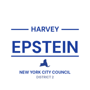

The district
 City Council
City Council State Senate
State Senate Congress
Congress Subway
Subway Citi Bike
Citi Bike NYC Ferry
NYC FerryTurn layers on and off. Tap an official's logo or a board's seal for its page. Zoning and land use lot by lot are on the land use map.
About
Assembly Member Deborah J. Glick represents State Assembly District 66. It sits in Manhattan.
The district overlaps community boards Manhattan 1, Manhattan 2, Manhattan 3 and Manhattan 4.
It is policed by the 1st, 5th, 6th and 9th Precincts.
It overlaps council districts 1, 2 and 3 and Senate districts 27 and 47.
Members of the State Assembly serve two year terms.
Next on the ballot in November 2026. Find your poll site and sample ballot there, or see what is coming up on the calendar.
Assembly District 66 in numbers
U.S. Census Bureau, American Community Survey 2019-2023 5-year estimates.
Bills
Committees
Contact
Overlap
Community boards


Bars show how many of the district's election districts fall in each board.
Overlapping elected officials



| Manhattan CB 2 | 62% of the assembly district | 91% of it |
| Manhattan CB 1 | 21% of the assembly district | 28% of it |
| Manhattan CB 3 | 11% of the assembly district | 13% of it |
| Manhattan CB 4 | 4% of the assembly district | 5% of it |
| Manhattan CB 5 | 2% of the assembly district | 3% of it |
| 6 Precinct | 40% of the assembly district | 100% of it |
| 1 Precinct | 34% of the assembly district | 40% of it |
| 9 Precinct | 15% of the assembly district | 40% of it |
| 5 Precinct | 4% of the assembly district | 12% of it |
| 13 Precinct | 3% of the assembly district | 6% of it |
| 10 Precinct | 3% of the assembly district | 6% of it |
| Sector 1C | 18% of the assembly district | 63% of it |
| Sector 1D | 15% of the assembly district | 100% of it |
| Sector 6D | 13% of the assembly district | 98% of it |
| Sector 6B | 10% of the assembly district | 100% of it |
| Sector 6A | 8% of the assembly district | 100% of it |
| Sector 6C | 8% of the assembly district | 100% of it |
| Sector 9C | 8% of the assembly district | 100% of it |
| Sector 9D | 8% of the assembly district | 100% of it |
| Sector 13B | 3% of the assembly district | 38% of it |
| Sector 10A | 3% of the assembly district | 26% of it |
| Sector 5C | 2% of the assembly district | 22% of it |
| Sector 5A | 1% of the assembly district | 9% of it |
| School District 2 | 89% of the assembly district | 18% of it |
| School District 1 | 11% of the assembly district | 17% of it |
| Council District 3 | 35% of the assembly district | 25% of it |
| Council District 1 | 33% of the assembly district | 24% of it |
| Council District 2 | 32% of the assembly district | 37% of it |
| Senate District 27 | 83% of the assembly district | 41% of it |
| Senate District 47 | 14% of the assembly district | 7% of it |
| Senate District 28 | 3% of the assembly district | 2% of it |